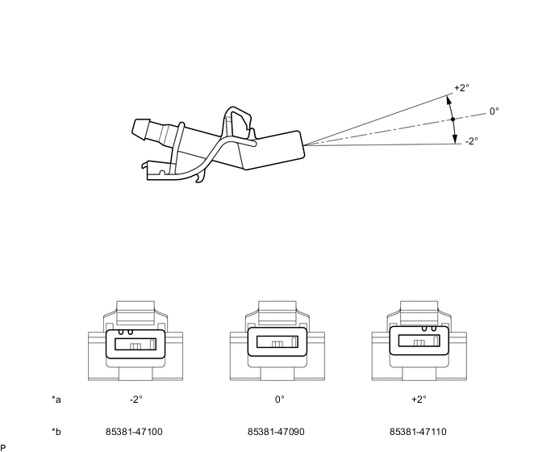

PROCEDURE
REMOVE WASHER NOZZLE SUB-ASSEMBLY
ADJUST WASHER NOZZLE SUB-ASSEMBLY
Select a washer nozzle sub-assembly so the position the washer fluid hits the windshield will be within the standard area. Replace the washer nozzle sub-assembly with the selected one.

| *a | Washer Fluid Spray Angle | *b | Part Number |
INSTALL WASHER NOZZLE SUB-ASSEMBLY